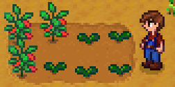
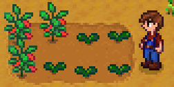

O nosso site tem o intuito de demonstrar ao público sobre a importancia da agropecuária envolvendo todos os meios que ocorrem, como as importações e exportações dos produtos agriculos e os impactos que causa no meio ambiente, abaixo demonstramos alguns temas e fatores que acabam entrando no nosso tema, e acima também temos as nossas outras páginas, fique a vontade.
 

Nós damos a oportunidade de você de ficar atento ao nosso site e as informações que modificamos, recebendo notifiações e e-mails, apenas criando uma conta, não perca essa oportunidade.


Aqui nós apresentamos as assitencias tecnicas que ajudam e melhoram os produtos, utilizando dá sobre manejo, uso de tecnologias, controle de pragas e preservação do meio ambiente.
Na assistencia veterinaria nós mostramos como eles garantem a saúde, bem-estar e produtividade dos animais no campo, com acompanhamento especializado, os produtores recebem orientações sobre prevenção de doenças, alimentação adequada e cuidados que melhoram a qualidade da produção e o desempenho dos rebanhos.

Nós demonstramos as principais notícias do setor agropecuário sobre mercado, clima, inovações, políticas, tendências e tudo que impacta a vida no campo e a produção agrícola.
A agricultura é fundamental para a vida humana, mas também pode causar sérios impactos ao meio ambiente, como desmatamento, poluição do solo e da água, emissão de gases e perda de biodiversidade, aqui demonstramos tudo isso.